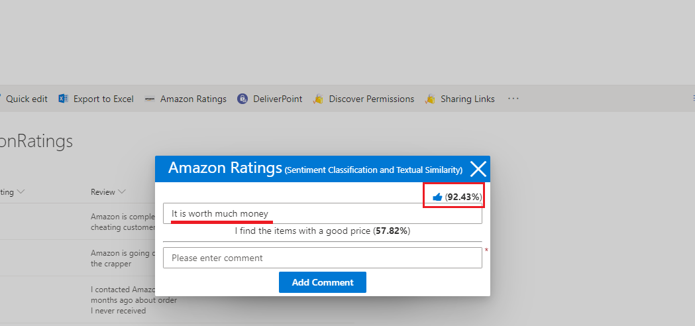

Amazon Reviews Sentiment Classifications and Textual Similarities with Universal Sentence Encoder.
GitHub Repository: https://github.com/Ashot72/spfx-universal-sentence-encoder
Video Link: https://youtu.be/6e3TPawyhRQ
Sentiment classification is the task of looking at a piece of text and telling if someone likes or dislikes the thing, they are talking about.
The input X is a piece of text and the output Y is the sentiment which we want to predict, such as the star rating of a movie review.
The movie is fantastic - 4 starts
The movie really sucks - 1 star
Textual Similarities - is that sentences are semantically similar if they have a similar distribution of responses. For example,
How old are you? and What is your age? are both questions about the age, which can be answered by similar responses
such as I am 48 years old. In contrast, while How are you? and How old are you? contain almost identical words, they have very different meanings
and lead to different responses.
Universal Sentence Encoder - https://github.com/tensorflow/tfjs-models/tree/master/universal-sentence-encoder encodes text into 512
embeddings (we will discuss embeddings) and uses a vocabulary of 8000 words. An additional benefit of the model is that it is trained on short
sentences/phrases (e.g. amazon short comments).
The model is trained and optimized for greater-than-word length text, such as sentences, phrases or short paragraphs. It is trained on a
variety of data sources and a variety of tasks with the aim of dynamically accommodating a wide variety of natural language understanding
tasks.
In our Amazon Reviews SharePoint SPFx-extension we make use of Universal Sentence Encoder lite model
https://github.com/tensorflow/tfjs-models/tree/master/universal-sentence-encoder to rate a comment/review based on the predefined existing
reviews and find a similar review.
One-Hot/Multi-Hot Encoding
In deep learning, values are mostly represented as float-type tensors (floating-point numbers) but it is different with text. Text data are based on
characters, not real numbers. That makes things difficult as there is no connection between say, k and p in the same sense as a number
between 1.23 and 1.45. Text data should be turned into vectors (e.g. array of numbers) before they can be fed into deep-learning models.
The conversion process is called text vectorization. One of the ways is one-hot encoding. In English there are around 10000 most frequently
used words. We can form a vocabulary based on those words. Any given word in in this vocabulary can be given an integer index.
So, every English word in the vocabulary can be represented as a length-10000 vector, in which only the element that corresponds to the index
is 1 and all remaining elements are 0.
Figure 1
Here is one-hot encoding of a word.
Figure 2
What if we have a sentence instead of a single word such as the cat sat on the mat. In this case we can get the one-hot vectors
for all the words that makes up the sentence and put them together to form a 2D representation of the words. This approach
perfectly preserves the information about what words appear in the sentence and in what order.
Figure 3
When text gets long, the size of the vector may get so big that is no longer manageable. A sentence in English contains
about 18 words on average. Having the vocabulary size of 10000 and a sentence of 18 words, it takes 10000 * 18 = 180000
numbers to represent just a single sentence which takes much larger space than the sentence itself.
Figure 4
One of the ways to deal with this problem is to include all the words in a single vector, so that each element in the vector represents
whether the corresponding word has appeared in the text. In this representation, multiple elements of the vector can have the value 1.
This is why it is called multi-hot encoding. Multi-hot encoding has a fixed length, which is the size of vocabulary (10000), regardless of
how long the text is. It solves the size-expansion problem. The main drawback is that we lose the order information. We cannot tell
from the multi-hot vector which words come first and which words next. For some problems it is OK, for others unacceptable.
Word Embeddings
What is word embedding? Similar to one-hot encoding (Figure 1), word embedding is a way to represent a word as a vector, which is
1D tensor in TensorFlow.js. However, word embeddings allow the values of the vectors elements to be trained instead of hard-coded.
When a text oriented neural network uses word embedding, the embedding vectors become trainable weight parameters of the model.
Figure 5
In the past, in NLP (natural language processing), words were replaced with unique IDs in order to do calculations. The disadvantage
of this approach is that you will need to create a huge list of words and give each element a unique ID. Instead of using unique numbers
for your calculations, you can also use vectors to that represent their meaning, so-called word.
Figure 6
Here, each word represented by a vector. The length of a vector can be different. The bigger the vector is, the more context
information it can store and the calculation costs go up as vector size increases. The element count of a vector is also called the
number of vector dimensions. In the picture the word example is represented with (4, 2, 6) where 4 is the value of the first
dimension, 2 of the second and 6 of the third dimension.
In more complex examples, there could be more than 100 dimensions which can encode a lot of information like
gender, race, age, type of word.
Figure 7
A word such as one is a word that is a quantity like many therefore, both words vectors are closer compared to words that are
more different in their usage.
Figure 8
Here is an Embedding Matrix where we specified Embedding dimensions of 200 and the length of the sentence.
We will go deeper into these numbers when we dive into the code.
Figure 9
You may remember that Universal Sentence Encoder's Embeddings dimensions are 512!
Application
Figure 10
Our SharePoint list defines 60 negative Amazon comments/reviews with rating of zero.

Figure 11
Actually, these are Amazon reviews I have taken them from this site corresponding one-star ratings.
Figure 12
The list includes 60 positive reviews. Altogether 120 reviews.
Figure 13
Positive reviews correspond to Amazon five-star ratings.
Figure 14
When we run the SPFx extension for the first time we should create Word Embeddings and train the model.
Figure 15
We obtain reviews from the list to create word/sentence embeddings.
Figure 16
Sentence embeddings are created for 120 comments and the embedding dimension is 512.
Figure 17
We train the model after sentence embeddings have been created.
Figure 18
If you run the app the second time you may notice that this time there is no Train button and you can directly enter a comment.
Figure 19
The reason is that we save the model and its weights in the local storage and load them from the storage. No need to train the model each time.

Figure 20
When you add a comment the app displays thumbs up or thumbs down icon and the probability. The comment It is worth much money is a positive result
with 92.43% probability.
Figure 21
It is not worth much money is a negative comment - 64.39% probability.
Figure 22
For each entered review we also display a similar sentence. We display the most similar sentence regardless of ratings. For example, It is not worth much money is a
negative comment while The prices are a lot cheaper is a positive review. We just find the most similar sentence.
Figure 23
For example, for the comment Amazon is my go-to we got 100%. It is because Amazon is my go-to is one of the reviews specified in the list. We have 100% match.
Figure 24
If you look at the embeddings you will see that the embedding vector produced by the Universal Sentence Encoder model is already normalized,
meaning values are in the range 0 and 1. Therefore, to find the similarity between two vectors, it is enough to compute their inner (dot) product.
Inner product between normalized vectors is the same as finding the cosine similarity.
Figure 25
The sentence embedding for the comment It is worth much money is xPredict 2D tensor having [1, 512] shape.
Figure 26
The shape is [1, 512] because we want to predict just for one comment - It is worth much money.
Figure 27
Our reviews embeddings shape is [120, 512] as we have 120 comments.
Figure 28
We can get the embedding of the first comment using slice. this.xTrain.slice([0, 0], [1]) will give us the embedding of the first review in the list.
Figure 29
Here is the first review in the list.
Now, we should calculate the inner/dot product of each review (this.xTrain.slice([i, 0], [1]) ) and our comment It is worth much money xPredict (Figure 25) and find the highest score.
The highest score will give us the most similar sentence.

Figure 30
Let's test dot product. Our sample xTrain shape is [1,3] for testing (embeddings of an existing review)
xPredict is the comment's embeddings (It is worth much money) which has the same shape. You see that we cannot do dot product operation.
Figure 31
What we have to do is transpose xPredict. Actually, we flipped xPredict. Previously, the tensor's shape was [1, 3] (1 row and 3 columns)
now it became [3, 1] (3 rows and 1 column). The result is a tensor with a value of 26 (1 * 3 + 2 * 4 + 3 * 5 = 26).
Figure 32
We go through each comment and find the highest score.
Figure 33
You see the result. I find the items with a good price is the most similar sentence.